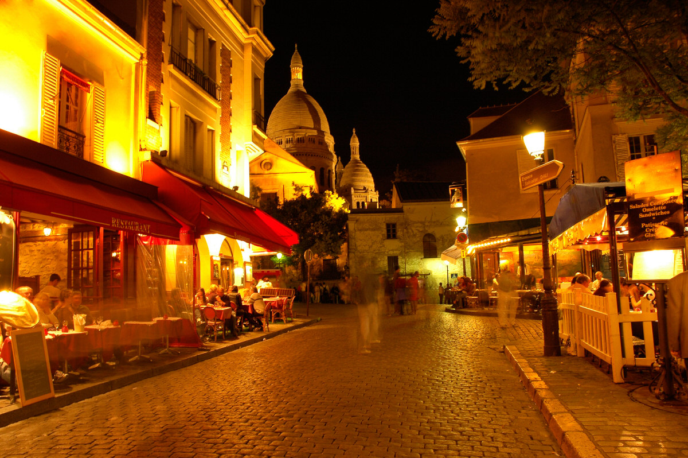

Paris

The Eiffel Tower is probably the one thing that you think about when you envision Paris, and undoubtedly it is one of the most famous landmarks in this beautiful city. Built in 1889 for the World Exhibition, this tower stands 984 feet and can be seen from almost anywhere in the city; even if you don't take time out of your schedule to visit the tower itself in the city's seventh arrondissement you're guaranteed to see it. It's inexpensive as far as tourist attractions are priced, so it won't put a dent in your touring budget if the whole family buys tickets to go all the way to the top. There are lifts as well as stairs to the second floor, and if you're adventurous or want some exercise, you can also climb the 704 steps to the very top of the tower to get one of the most beautiful views of the City of Lights you're likely to find. It's open year-round as well, even in cases of inclement weather, and with hours as late as midnight during the summer months, you'll easily be able to find time to make your way to the top of this cultural landmark no matter what your touring schedule is.
The Eiffel Tower is the most amazing tower I have ever seen in movies and pictures. My sister wants to go there because she loves it and we love it. The way it was structured was very amazing how hard work for people to do that. Someday I will bring my family here in Paris and most of all just to see the Eiffel Tower.
Notre Dame de Paris is located in Paris's fourth arrondissement, this cathedral has been called "the religious center" of Paris and sits in the heart of the city, so wherever it is that you're travelling should put you right on track for making your way to this important religious site. Even if you are not a practitioner of the Roman Catholic faith, it's still an enriching part of any Paris visit to pay Notre Dame a visit, whether it's sitting in for one of its services (almost all of them are in French, though, so if you care about understanding them it's best to make sure you're fluent) or having a guided tour that lasts about one hour.
The Montmartre is translated to "mountain of the martyr", the name references the site of the martyrdom of the first bishop of Paris, Saint Denis. Montmartre has been officially designated as an historic district, and is popular amongst tourists because it is one of the most colorful neighborhoods that Paris has to offer. Since Napoleon III's donation of all of the land to his friends pushed the original Paris inhabitants out to city's outskirts in the 19th century, Montmartre was developed and came to be known as a place where the city proper's rules and regulations did not apply. It became a breeding ground for brilliant minds, housing many artists like Picasso, Degas, Toulouse-Lautrec and Renoir.
Today, it retains much of the charm it held in antiquity, and offers tourist spots like the Mus'e de Montmartre and the mansion directly behind it which was once called home by Renoir, as well as a cemetery where many famous artists are buried. The Place du Tertre is a square that you don't want to miss if you are interested in contemporary art, or even an artist yourself; many artists set up their easels here on a daily basis and ask if they can paint your portrait, creating a unique souvenir for you to keep from your trip. If your Paris trip includes a bit of clubbing, Montmartre boasts a wide variety of nightclubs as well
Arc de Triomphe is commissioned by Napoleon in 1806 and completed in 1836, this arch is another great piece of history in Paris that you should make it a point to go see before your trip is over. It's engraved with the names of generals who commanded French troops of Napoleon's armies and, when you get close enough to look at it, the sculptural style and detail in the carving on its surface is truly exquisite. If you don't want to climb, though, heading to the top for the view you get probably isn't for you; 40 steps and no option of a lift await you. If you're in Paris over the summer holidays, the best day to visit Arc de Triomphe is on July 14: Bastille Day, historically remembered as the beginning of the French revolution. A parade trails up the Champs-Elys'es that leads to this arch, and it's something to make sure you don't miss, it's located on the borders of the eighth, sixteenth and seventeenth arrondissements of the city.
La Conciergerie is another of the must-see places to visit for the history enthusiast, this landmark is best seen on the same day as a walk through Place de la Concorde to get the full effect of studying landmarks related to the French Revolution. A repurposed palace just like the Louvre, it was a prison during the revolution, and, while it has been decommissioned and no longer serves that purpose, it is still viewable as a historical monument, including cells reconstructed to look like the ones that condemned prisoners spent their last days in. Marie Antoinette is one of the most famous prisoners ever housed here, and the cell she was kept in during the days leading up to her demise has been made into a chapel at the request of Louis XVIII. The Women's Courtyard and "Grooming Room" of the palace can be visited during tours as well as Marie's chapel, named Girondins' Chapel. While only a small portion of it is accessible to the public (the rest is used for Paris law courts) it's definitely worth visiting.
Other places you may know